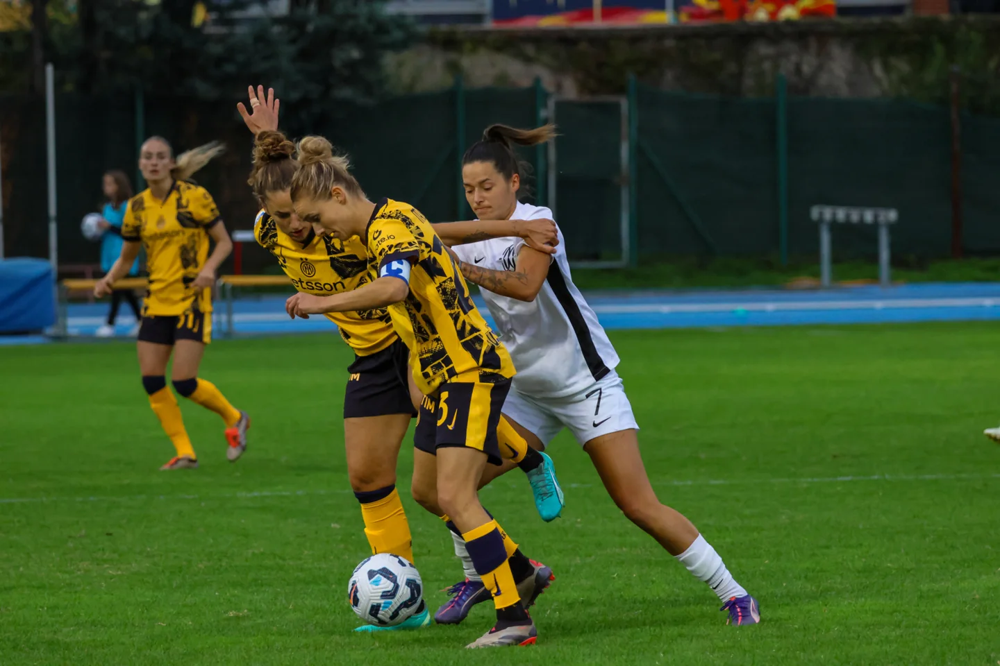
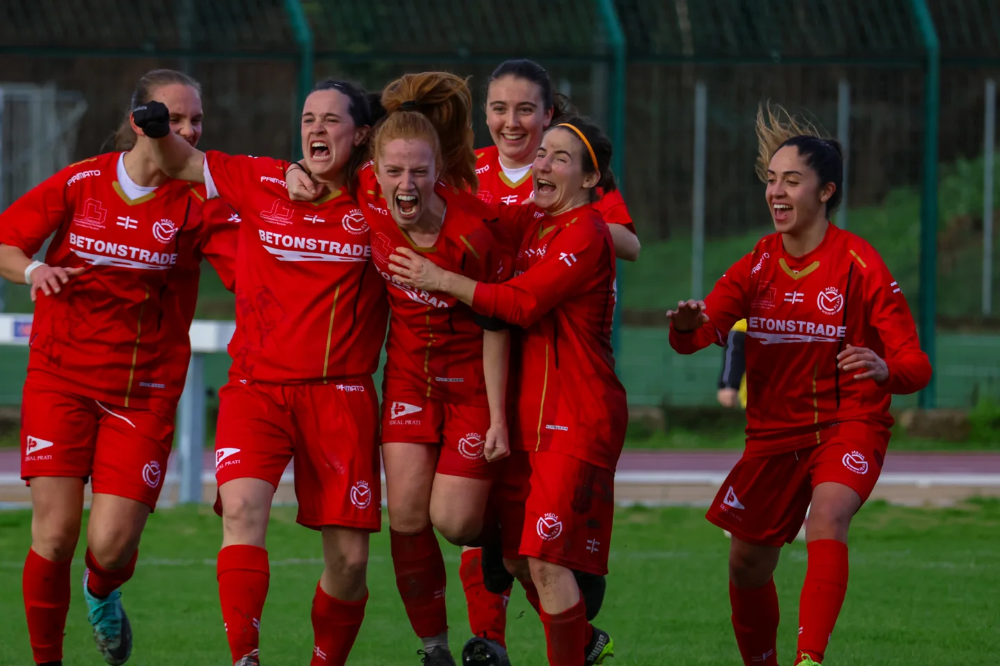
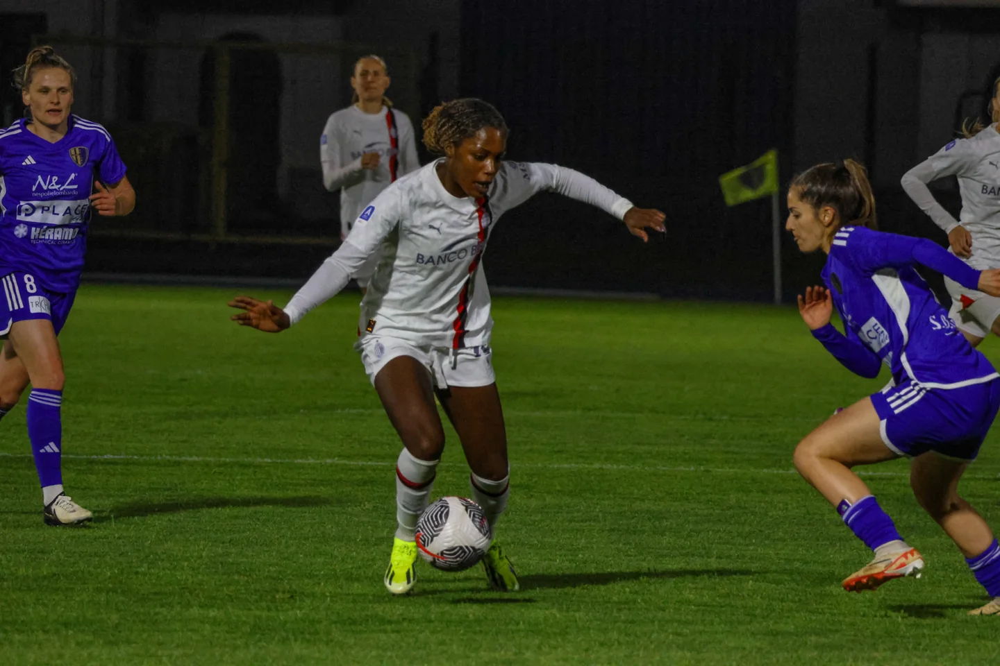
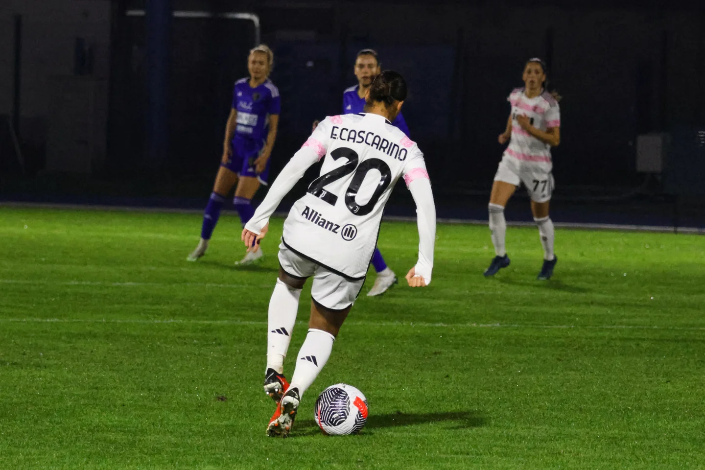
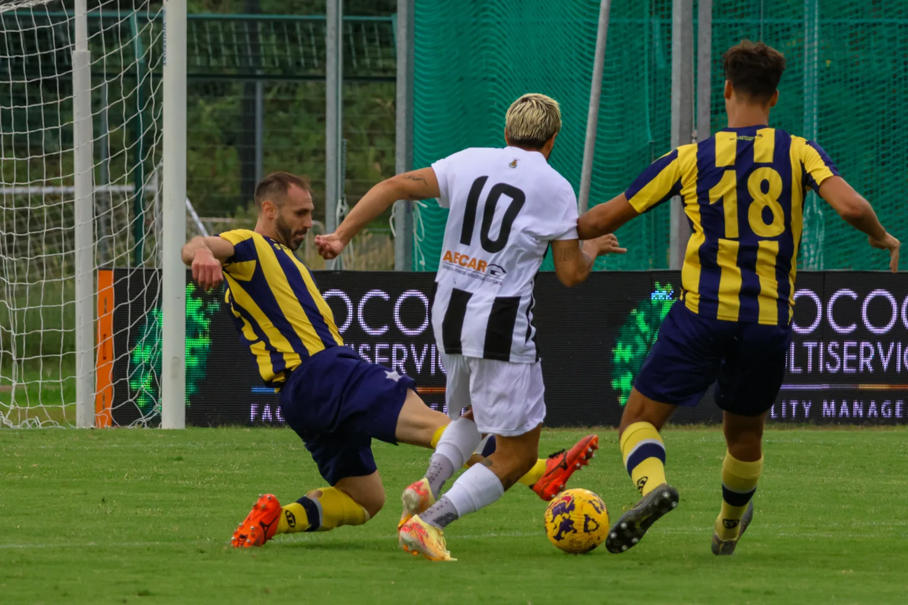
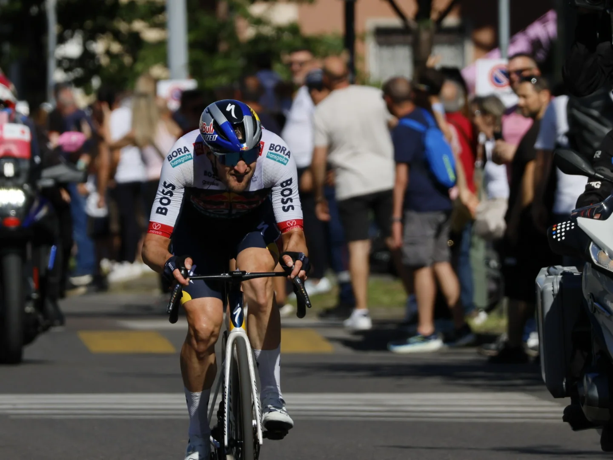
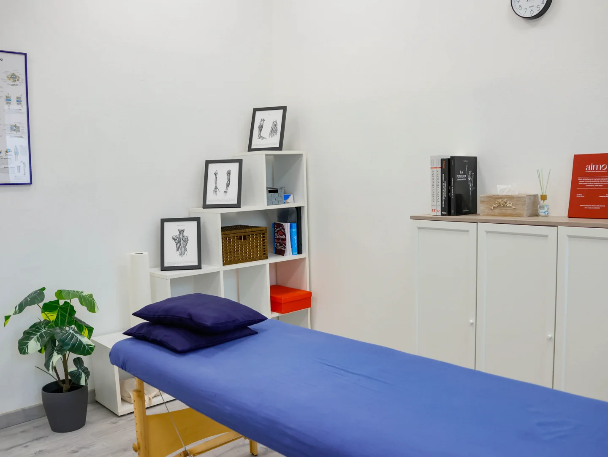
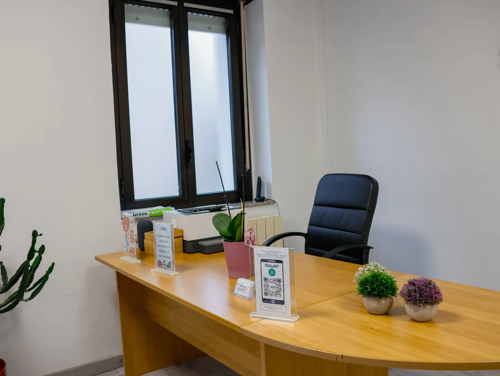
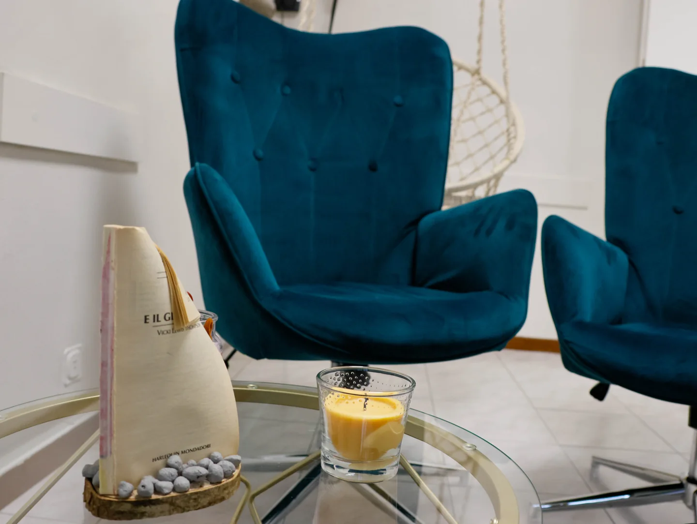
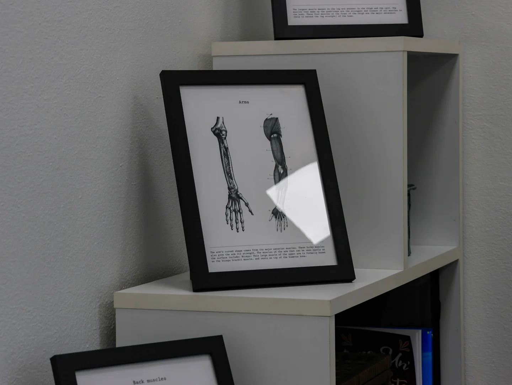

GALLERIA
FOTOGRAFICA
Catturare l'attimo, raccontare una storia. Dalle partite di calcio al Giro d’Italia, fino agli shooting per Miho sushi e Neofisio.
Fotografia Sportiva
Sport / Copertura fotografica degli eventi: azione, ritmo e momenti di squadra.

Como Women–Inter · 01

Real Meda · 02

Como Women–Milan · 03

Como Women–Juventus · 04

Meda–Casteggio · 05

Giro d’Italia 2025 · 06
Shooting
Shooting / Progetti fotografici per Miho sushi e Neofisio.
Miho sushi · 01
Miho sushiShooting
CONCEPT
"L'ARTE DI CATTURARE L'IDENTITÀ."
Miho sushi · 02
Miho sushi / Shooting

Neofisio · 03

Neofisio · 04

Neofisio · 05

Neofisio · 06
Scopri altri lavori
Scopri i miei progetti di grafica su Behance e non perderti gli ultimi scatti che pubblico su Instagram.